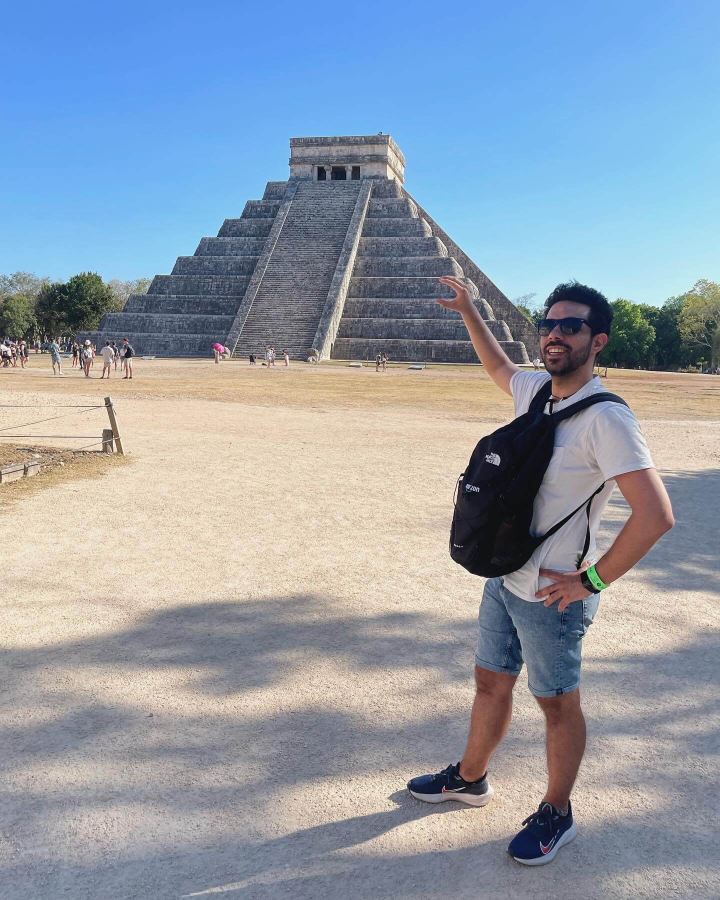

Sobre Carlos

Carlos Ramírez Hernández (Charly para los amigos) es un escritor de fantasía y ciencia ficción nacido en Palma de Mallorca, España. Sus historias, inspiradas por los mundos de La Tierra Media, Temerant y otros cientos de universos, exploran lo extraordinario en lo cotidiano y lo humano en lo extraño.
Cuando no está escribiendo o en su trabajo de nueve a cinco, es probable encontrarle ensuciando la cocina haciendo pizzas o dedicando más tiempo del que debería a sus dados y videojuegos.
Una Melodía de Silencio es su novela debut. Si te interesa saber más, conecta con Carlos en redes o explora el blog.